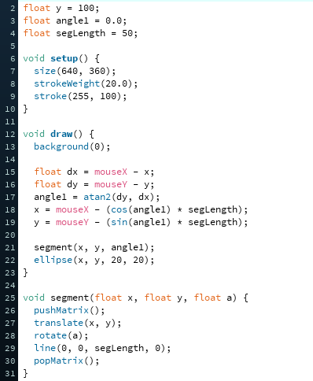
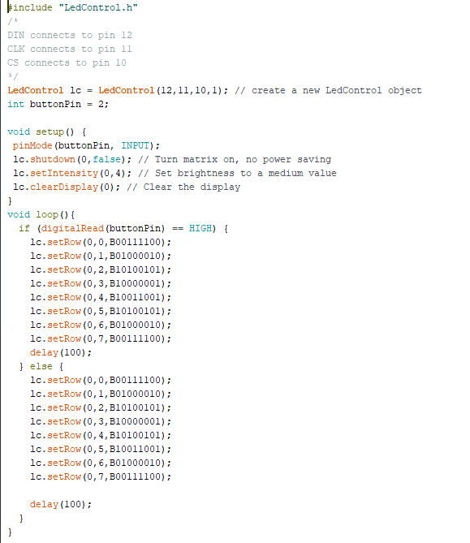
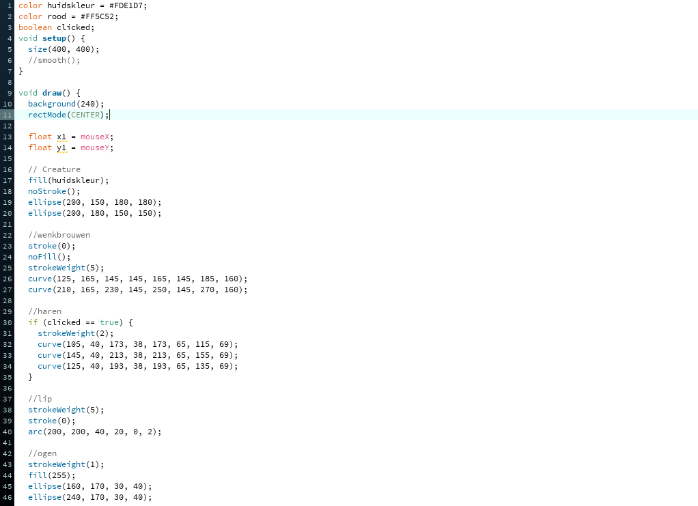
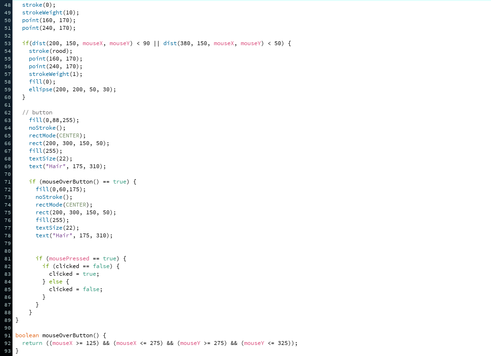

-
Google Home
Creator: Google
Google Home is een product die zich gedraagt als een persoon. Je kan hem allemaal dingen vragen om te doen en hij voert het uit. Ik zeg wel hij, maar Google Home is zo in te stellen dat je kan kiezen tussen een mannelijke en vrouwelijke stem. Je kan google allemaal dingen doen. Zo kan je hem bijvoorbeeld het licht aan of uit laten doen, maar ook de moeilijkste vragen stellen, die hij dan op google zoekt en jou probeert een antwoord te kijken.
-
Tesla
Creator: Tesla
Een ander product is een auto van Tesla. Deze auto maakt gebruikt van artificial intelligence. De auto leert zichzelf soort van auto rijden. Elke keer als er iets op de weg gebeurt en deze situatie nog niet bekend is in het systeem, wordt het toegevoegd, zodat de auto op steeds meer situaties zelf kan reageren en het automatisch rijden van de tesla steeds veiliger wordt. Ook kan je met de app van Tesla alvast je garage deur open doen en de tesla voor de deur laten zetten wat natuurlijk onwijs gaaf is.
-
Pou
Creator: Paul Salameh
Als laatste project heb ik Pou gevonden. Ik heb dit zelf ook gespeeld, het is een app waarin het doel is om een huisdier te verzorgen. Met die huisdier kan je verschillende dingen doen, zoals douchen, eten geven, aandacht geven. Ook kan je verschillende spelletjes met het huisdier bijvoorbeeld voetbal of volleybal. Om je huisdier te personaliseren kan je hem ook verschillende kleren aandoen die je moet ontgrendelen.
Artificial creature
Research
Tinkering
-
Volgend object
Als eerst ben ik gaan experimenteren met processing. Het leek mij een leuk idee om een voorwerp te maken die mijn muis volgt. Uiteindelijk ben op het volgende resultaat gekomen, namelijk poppetje die een zaklamp voor zich heeft die je met je muis kan besturen:
 -
Smiley
Als volgt ben ik bezig gegaan met de arduino en het led boord. Het leek mij leuk om via het led boord een poppetje of smiley te maken die een emotie uit kan drukken die te veranderen is. Zo heb ik uiteindelijk een smiley gemaakt die doormiddel van een knop van emotie kan veranderen. Hieronder is het resultaat te zien:
 -
Klikbare button
Als laatst ben ik weer te werk gegaan met processing. Het leek mij handig om onder te knie te krijgen hoe buttons werken in processing. Daarom ben ik gaan experimenteren met buttons en heb ik uiteindelijke een button gemaakt. Als je met je muis over de button gaat verandert hij van kleur en als je er op drukt krijg je in je scherm te zien dat je er op gedrukt hebt.
Eindopdracht
-
De boze baby
Als eindopdracht ben ik een beetje in de richting van Pou gegaan. Alleen heb ik een baby gemaakt. De baby houdt er alleen niet van om aangeraakt te worden, gebeurt dit wel dan gaat de baby schreeuwen en krijgt hij rode ogen. Ook kan je de baby haar geven door op de knop haar te drukken. Het haar kan ook weer weggehaald worden door nogmaals op de knop te drukken. Ik ben begonnen met de vorm van het hoofd te maken en die de juiste kleur te geven, nadat dit gedaan was ben ik gaan werken aan de ogen en de mond dit verliep vrij makkelijk.
Vervolgens ben ik gaan werken aan de haren. Ik ben begonnen met de haren zelf wat nog makkelijk ging en daarna ben ik gaan werken aan de button waarmee je de haren kan laten komen en gaan. Uiteindelijk is dit het resultaat:
 
Reflectie
-
De opdracht van artificial creature vind ik een leuke opdracht. Ik vind de techniek erachter leuk. Ik denk dat er twee kwanten aan artificial creatures zijn, namelijk de fantasie versie en de werkelijkheid. De producten zoals tesla en google home ben ik van mening dat het veel gebruikt gaat worden/wordt. Het fantasie gedeelte, zoals Pou is iets dat voor een korte tijd leuk is en niet een lange levensduur heeft naar mijn mening.
Het werken met processing verliep mij eigenlijk redelijk goed. Ik heb al wat ervaring in programmeren dus het was ook gemakkelijk aan te leren. Het probleem waar ik tegen aanliep bij mijn eindopdracht is dat mijn tinkering fase al bij sommige projecten een hoog niveau had, waardoor er veel tijd in zat en uiteindelijk het eindproduct niet een nog hoger niveau kon zijn dan sommige tinkering projecten. Maar uiteindelijk ben ik blij met alle projecten die ik gemaakt heb en heb ik genoten van de weg er naar toe.